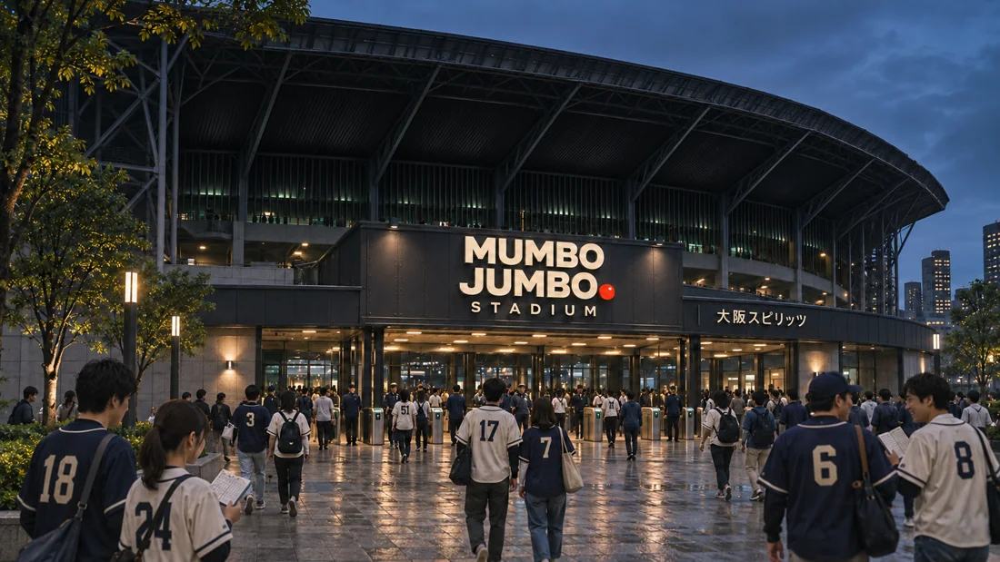
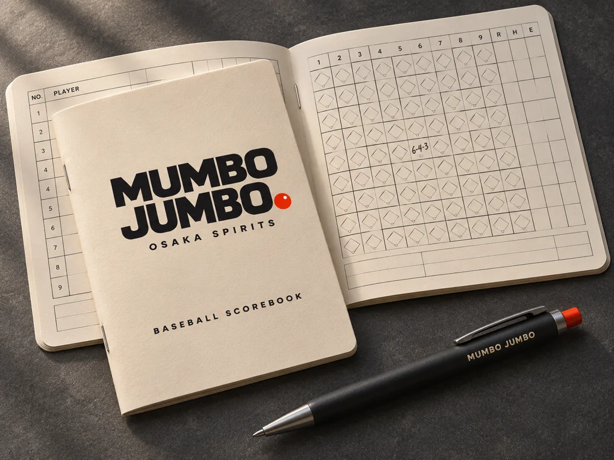
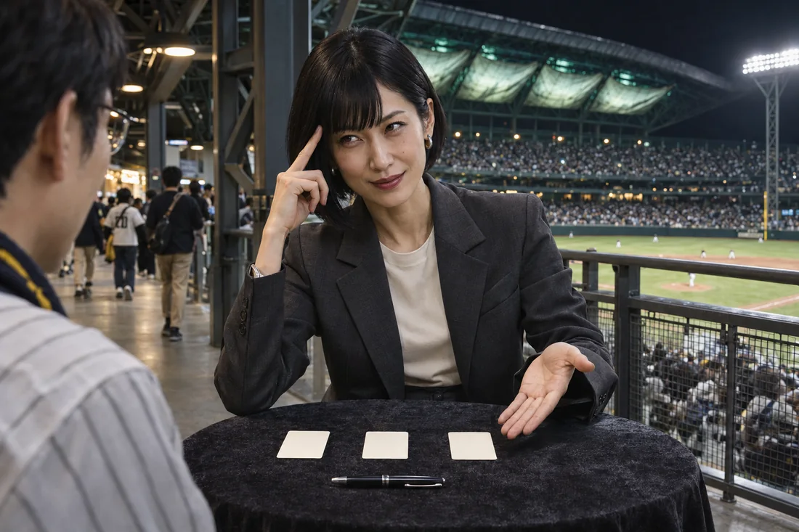
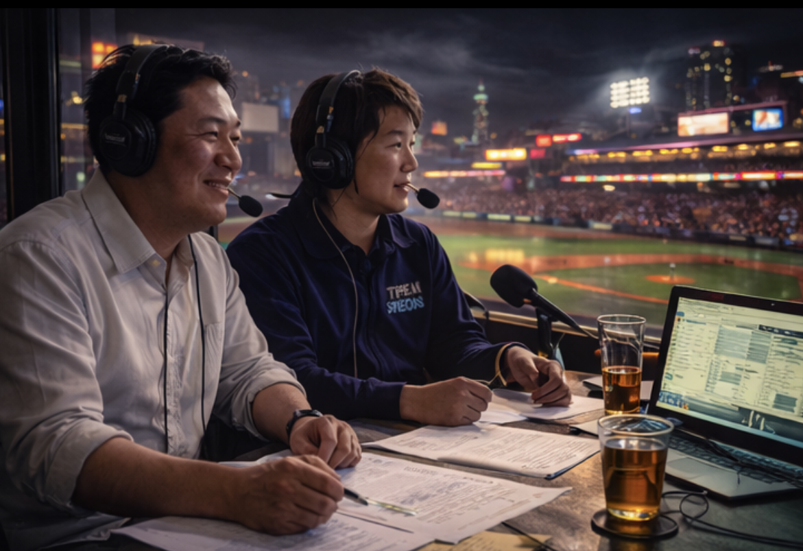
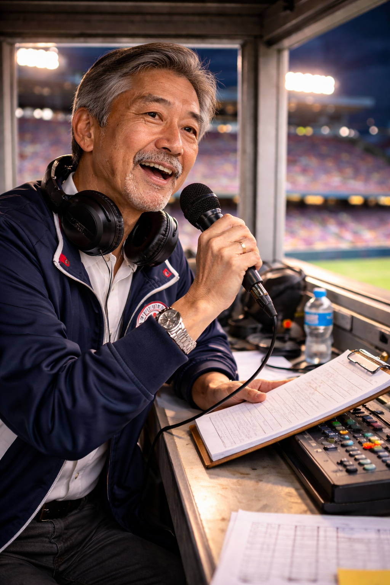
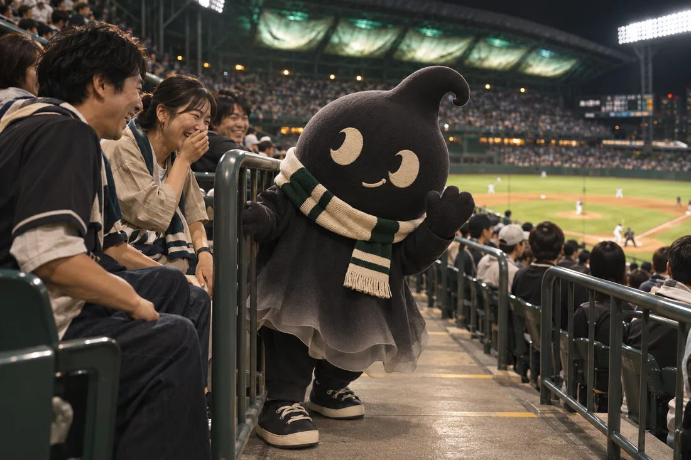
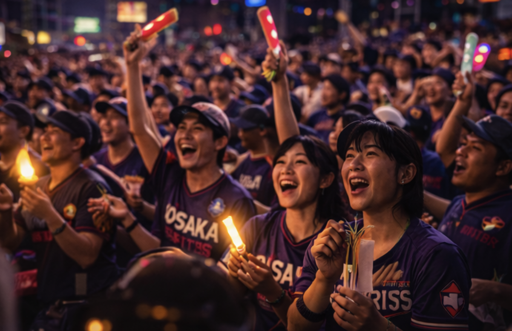

Osaka finished 89–73 with a +89 run differential. Luka Kovačević won 21 games, and he and Kofi Boateng each posted an ERA under 2.00 over more than 190 innings. At the plate, second baseman Arman Daryan hit 46 home runs.
Select a card to flip it over. To claim an open card, add a detail of your own and send it to GLB for review. If approved, GLB will publish your contribution with your user ID and send you a unique, private 16-digit code for the card.
Loading the card collection…
MUMBO JUMBO Stadium

Home ballpark · Osaka, Japan
Fans call it the Jumbo. Pale panels glow green beneath the roof at night, and the right-center scoreboard shows the inning-by-inning line and scores from around GLB. Beyond right field, a silver express crosses the skyline on its own elevated line.

Game-day giveaway
Keep score in ink
Osaka’s stationery sponsor, MUMBO JUMBO, pairs a pocket baseball scorebook with a black Nano Ink click pen. Its red ink dot is on the cover, the entrance sign and the left-center wall.
Okeo Okeo

Resident entertainer
Okeo Okeo performs close-up magic, mentalism and mystic illusions on game nights at the Jumbo. A few cards and a pen are enough to draw a crowd on the concourse.
Game voices

Broadcast play-by-play
Ryo Tanaka
Tanaka calls the pitch and leaves room for the crowd between deliveries.

Stadium announcer
Mina Kuroda
Kuroda calls the lineups and substitutions over the park’s public address system.
Potari ぽたり

Potari, the Osaka Spirits’ mascot, looks like a drop of ink that bounced off the page. Between innings, the little spirit peeks around the rail and waves to fans in the stands.
In the stands

Chants rise from the stands in short bursts. In a close count, the section quiets as the pitcher comes set.